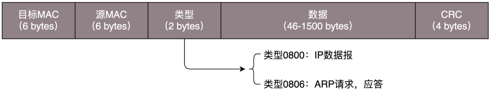
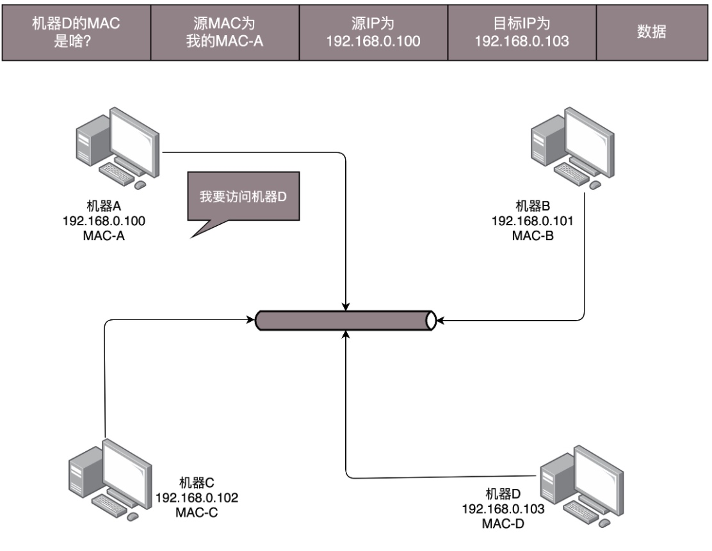
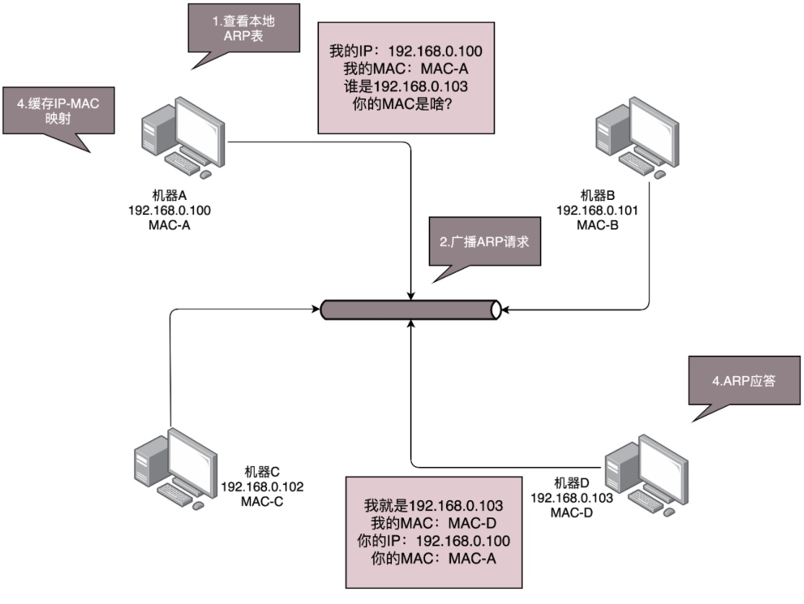
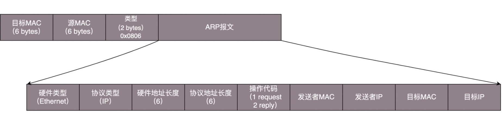

物理层
物理层是网络架构中最低的一层，为传输数据所需要的物理链路创建、维持、拆除，而提供具有机械的，电子的，功能的和规范的特性。简单的说，物理层确保原始的数据可在各种物理媒体上传输。局域网与广域网皆属第1、2层。
物理层可以简单的理解为网线，当两台电脑要互相连接时可以用一根网线交叉接线 设置IP地址的方式直插联机，三四台机器也可以使用Hub集线器来进行连接。
上面的方式都没有使用到路由器或交换机，它们只在物理层工作，会把收到的每一个字节都复制到其他端口上，这是第一层物理层的联通方案。
链路层
链路层解决的是网络包发送相关的问题，包括：收发机器，收发顺序，可能产生的异常。
Hub 采取的是广播的模式，如果每一台电脑发出的包，链接的每个电脑都能收到，这就会导致一些问题。
- 这个包是谁发给谁的？
- 所有人都在发，会不会产生混乱？
- 如果发送的时候出现了错误怎么办？
这几个问题，都是第二层，数据链路层，也即 MAC 层要解决的问题。
MAC 的全称是 Medium Access Control，即媒体访问控制。
多路访问
其实就是控制在往媒体上发数据的时候，谁先发、谁后发的问题。防止发生混乱。这解决的是第二个问题。这个问题中的规则，学名叫多路访问。
有很多算法可以解决这个问题，例如接下来三种：
- 信道划分 各自走各自的管道
- 轮流协议 如名字一样大家按照顺序轮流发送
- 随机接入协议 直接发送，发现拥堵就等待错过高峰，以太网使用的就是这种协议。
MAC地址
解决了第二个问题，就是解决了媒体接入控制的问题，MAC 的问题也就解决好了。这和 MAC 地址没什么关系。
接下来要解决第一个问题：发给谁，谁接收？这里用到一个物理地址，叫作链路层地址。但是因为第二层主要解决媒体接入控制的问题，所以它常被称为MAC 地址。解决第一个问题就牵扯到第二层的网络包格式。对于以太网，第二层的最开始，就是目标的 MAC 地址和源的 MAC 地址。

接下来是类型，大部分的类型是 IP 数据包，然后 IP 里面包含 TCP、UDP，以及 HTTP 等，这都是里层封装的事情。
有了这个目标 MAC 地址，数据包在链路上广播，MAC 的网卡才能发现，这个包是给它的。MAC 的网卡把包收进来，然后打开 IP 包，发现 IP 地址也是自己的，再打开 TCP 包，发现端口是自己，此时再响应这个网络请求，如果要发回请求 就需要层层封装最后到MAC层。发来时的源MAC抵制就变成了目标MAC抵制。
ARP协议
ARP协议是已知IP地址，求MAC地址的协议。
它会向局域网广播目标IP地址，目标机器收到后会返回自己的MAC地址。如下图：


ARP协议 询问和回答的报文

为了避免每次都用ARP请求，机器本地会进行ARP缓存，因为机器是有可能上线下线改变IP地址的，所以ARP的MAC地址缓存也会过一段时间就过期。
循环冗余检测CRC
对于以太网，第二层的最后面是 CRC，也就是循环冗余检测。通过 XOR 异或的算法，来计算整个包是否在发送的过程中出现了错误，主要解决第三个问题。
上面提到使用Hub把几台电脑连接到一起可以组成一个局域网，因为Hub是广播的 不管接口是否需要都会把所有的Bit发送出去，然后让主机自己判断是否需要。
这种情况如果链接的设备增多就会出现问题，出现冲突，而且把不需要的包转发给每一个人也会造成带宽浪费，
而交换机可以解决这个问题。
交换机
交换机是一个 会检查每一个数据包的MAC地址，然后根据策略转发的设备。
交换机会逐渐学习记住局域网中的MAC地址，例如：
当A电脑给B电脑发送一个包时，当这个包到达交换机时 交换机也不知道B电脑的MAC地址，于是他会广播出去，同时记录下A电脑的MAC地址，之后所有发往A电脑的MAC地址的数据包就直接发往这一个口了。
这样循环往复，过一段时间后 交换机就可以知道整个网络环境里所有设备的MAC地址了。这个时候基本上就不用广播了，可以做到精准收发。记录设备MAC地址的表叫做转发表
因为每个机器的IP地址是会改变的，所在的口也会改变，所以交换机上的转发表会有一个过期时间。
有了交换机 一般来说有个几十台上百台电脑同时上网就没什么大问题了。
本文由 PCX
创作，采用 知识共享署名4.0 国际许可协议进行许可
本站文章除注明转载/出处外，均为本站原创或翻译，转载前请务必署名
最后编辑时间为: 2021-03-25T20:15:43+08:00